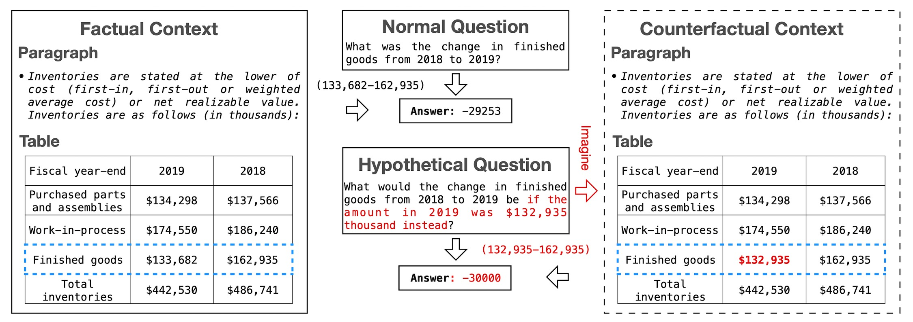

TAT-HQA (Tabular And Textual dataset for Hypothetical Question Answering) is a numerical QA dataset with hypothetical questions, i.e. questions containing an assumption beyond the original context. TAT-HQA aims to enable QA model the counterfactual thinking ability to imagine and reason over unseen cases based on the seen facts and counterfactual assumptions.
TAT-HQA has the following features in addition to the features of TAT-QA:
In total, TAT-HQA contains 8,283 questions associated with 2,758 hybrid contexts from real-world financial reports.
The following is an example of TAT-HQA along with its original TAT-QA example. The left box shows a factual tabular and textual context, where a normal question (the upper middle box) is asked. Based on the normal question, a hypothetical question is asked with an additional assumption "if the amount in 2019 was $132,935 instead", leading to a different answer (-30,000 vs. -29,253). The blue dashed boxes indicate the position that the assumption affects. The QA model is supposed to imagine a counterfactual context (the right dashed box) and reason over this imagined situation.

{
"table": {
"uid": "a3e9cad512b8d3ff0cd6e50774007eeb",
"table": [
[
"(In thousands of $)",
"2019",
"2018",
],
[
"Net Debt Receipts",
"$ 243,513",
"$ 30,300",
],
...
]
},
"paragraphs": [
{
"uid": "76573d23233ebdfc3c89609c6372e951",
"order": 1,
"text": "The most significant impacts of Hilli LLC VIE's
operations on our consolidated statements of income and
consolidated statements of cash flows, as of December 31,
2019 and 2018, are as follows: ..."
},
...
],
"questions": [ # Examples of 1) an original question and 2) a hypothetical question.
{
"uid": "b68356a11ee8d39571d44b087b1558c7",
"order": 1,
"question": "What was the change in net debt receipts between 2018 and 2019?",
"answer": 129,454,
"derivation": "129,454 - 0",
"answer_type": "arithmetic", # The answer type including `span`, `spans`, `arithmetic`, `counting` and `counterfactual`.
"answer_from": "table", # The source of the answer including `table`, `table` and `table-text`
"rel_paragraphs": [
],
"req_comparison": false,
"scale": "thousand" # The scale of the answer including `None`, `thousand`, `million`, `billion` and `percent`
}
{
"uid": "e982f2be72b37a222d61fe645df00168",
"order": 2,
"question": "What would be the change in net debt receipts between 2018 and 2019 if the amount in 2018 was 100,250 thousand instead?",
"answer": 29,204,
"derivation": "129,454 - 100,250",
"answer_type": "arithmetic",
"answer_from": "table",
"rel_paragraphs": [
],
"req_comparison": false,
"scale": "thousand"
"rel_question": 1 # The order of the corresponding original question under the same table.
}
]
}
| Rank | Model Name | Team Name | Exact Match | F1 | Created |
|---|---|---|---|---|---|
| - | Human Performance | - | 84.1 | 90.8 | - |
| 1 | TagOp - L2I | NExT | 54.4 | 54.7 | 13 May 2022 |
To evaluate your models, we have also made available the official evaluation script, To run the evaluation, use
python evaluate.py gold_data_path.json prediction_result_path.json 0
The predictions file in JSON format contains a dictionary with question ids as keys and the predictions as values (each prediction shall include both `answer` and `scale` in an array). For example,
{
"9337c3e6-c53f-45a9-836a-02c474ceac16": [
"4.6",
"percent"
],
"c4170232-e89c-487a-97c5-afad45e9d702": [
"16",
"thousand"
],
"d81d1ae7-363c-4b47-8eea-1906fef33856": [
["2018", "2019"],
""
]
...
}
The format of sample prediction file of TAT-QA is also suitable for TAT-HQA.
Please email the prediction file of the test set with the following information to us:
Please give us up to two weeks to evaluate your submission and we will add your model to the leaderboard.
For more information, please contact:
Please kindly cite our work if the dataset helps your research.
@inproceedings{li-etal-2022-learning,
title = "Learning to Imagine: Integrating Counterfactual Thinking in Neural Discrete Reasoning",
author = "Li, Moxin and
Feng, Fuli and
Zhang, Hanwang and
He, Xiangnan and
Zhu, Fengbin and
Chua, Tat-Seng",
booktitle = "Proceedings of the 60th Annual Meeting of the Association for Computational Linguistics (Volume 1: Long Papers)",
month = may,
year = "2022",
address = "Dublin, Ireland",
publisher = "Association for Computational Linguistics",
url = "https://aclanthology.org/2022.acl-long.5",
doi = "10.18653/v1/2022.acl-long.5",
pages = "57--69"
}